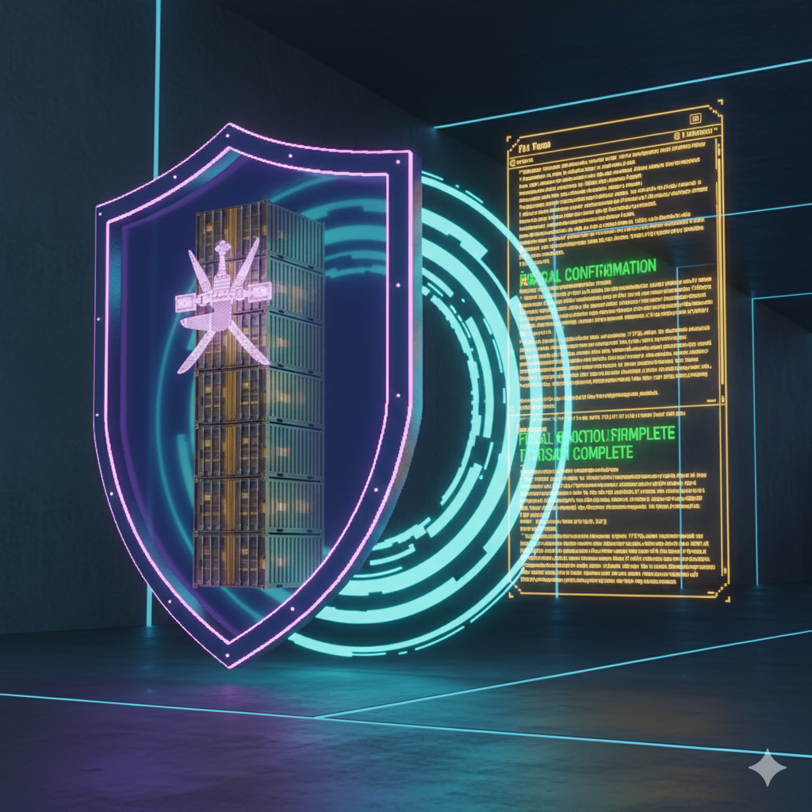

Chapter 03 · Technology Architecture
Digital Transformation & Data Governance

Building the
National AI Program
2024 – 2026
2024 – 2026
⚡ Digital Transformation
Building the
Digital Soil
for AI-Ready Oman
Data Governance · Cyber-Resilience · Human Capability
Before
Manual & Auto Silos
→
inTEUtion Transforms
AI-Ready Ecosystem · SOLS 2040 Aligned
→
Outcome
National Digital Sovereignty
Advanced IT Infrastructure
In alignment with the National Program for AI & Advanced Digital Technologies
(2024–2026),
we architect the foundational "Digital Soil" required for AI to become an essential enabler of
the Omani economy.
AI-Ready Foundation
Cyber-Resilience & Security
We provide enterprise-grade security protocols ensuring ASYAD's maritime data —
a national strategic asset — is protected against global cyber threats while remaining
highly available for critical decision-making.
National Data Shield
Intelligent Audit Trails
Our solution creates Immutable Digital Footprints — unlike legacy systems.
Auditors verify economy, efficiency & effectiveness of shipping operations through
automated, data-driven reporting.
Zero-Trust Compliance
Strategic
Human
Capabilities
Human
Capabilities
Empowering the Omani Maritime Workforce
We educate your teams on the intersection of maritime operations and fiscal sustainability. By mastering our integrated ERP-logistics architecture, ASYAD personnel gain specialized skills in revenue recognition and commercial leakage prevention — building the knowledge economy that Vision 2040 demands.
"Oman's location is its destiny, but its technology is its choice. We offer the digital discipline
required to turn the Sultanate's coastline into the world's most efficient trade corridor.
By bridging the technology gap, we don't just support the logistics and maritime sector —
we lead it into the 2040 era."
— inTEUtion Strategic Vision · ASYAD Digital Transformation Mandate